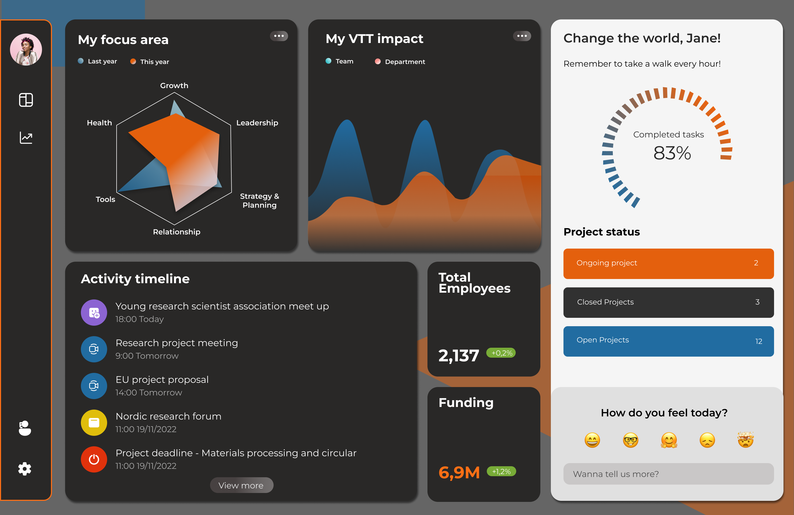

VTT faces the ongoing challenge of retaining talented employees, leading to high turnover rates and potential negative impacts on productivity and morale.
We won the challenge of VTT. We introduced an entryview to understand the potention career developement of talents and a I'MPACT meter to visualise employee's achievements and their impact in the fields.
Problem validation, Solution discovery, Web design
Figma, Google slides
8 - 9 Oct 2022, DASH Design hackathon
Most employees in VTT are researchers. This determines the nature of VTT is actually different than other compnaies. VTT itself is also funded by the government.
Young talents left VTT for better salaries and perks. Some researchers also feel overwhelmed by heavy workloads, long hours, and lack of flexibility, they may be attracted to organizations that prioritize work-life balance.
Research is a meticulous and time-consuming process that involves multiple stages. Even after the research is completed, there may be a gap in translating the findings into practical applications. Inevitably, researchers often face challenges in seeing the direct impact of their work in the real world.
One simple solution is to deploy a FAQ page on the open position page. It provides quick answers to commonly asked questions, saving talents time and improving their experience. It demonstrates transparency and expertise. Additionally, an FAQ page can improve website usability, and boost search engine visibility. So it can also increase the visibility of VTT.
Introducing an entryview (entry interview) for new employees is a great way to understand their expectations from day one. This entryview allows employers to gather valuable insights about their needs, goals, and concerns, enabling them to provide a more personalized onboarding experience. By conducting entry interviews, VTT can make new employees feel valued, demonstrate a commitment to their growth and satisfaction, and foster stronger relationships from the start. This proactive approach helps align employee expectations with company goals, leading to higher engagement and retention rates in the long run. Meanwhile, it also gathers comparable data to exit interviews to understand retention problems better.
I'MPACT meter is to visualize individuals the importance of their work on a constant basis. It is displayed in four scopes: personal, team, department and company. By visualising their impact, each individual can see the tangible results of their efforts and feel a sense of pride in their contributions. This also reinforces a culture of appreciation and motivation. 
We spent the first day of hackathon on interviewing multiple stakeholders from VTT to dig deeper into the problem. After defining and validating the real problem, we then jumped into the ideation of potential solutions by researching online and discussion within team.